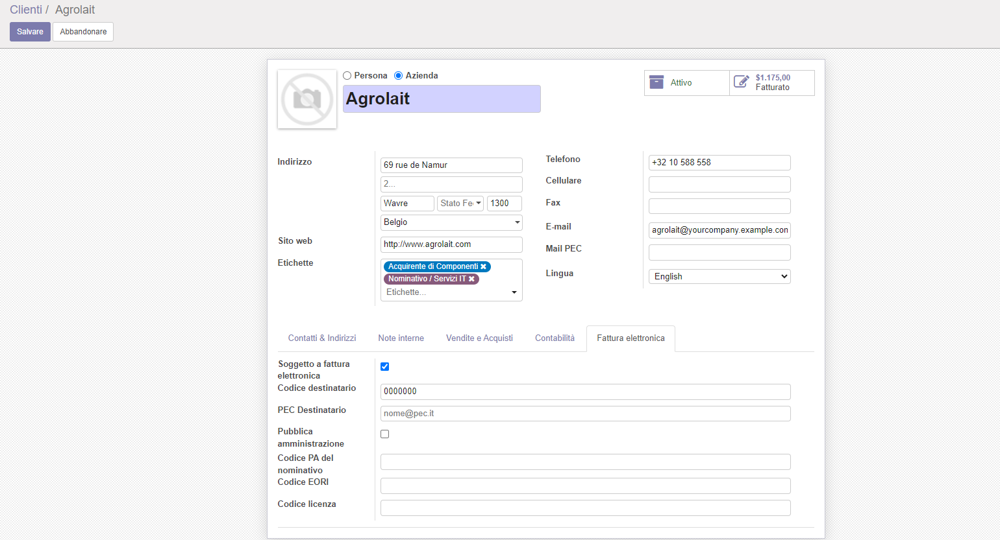

Infrastructure for Italian Electronic Invoice + FatturaPA

Infrastruttura per Fattura elettronica e FatturaPA






This module manage infrastructure to manage Italian E Invoice and FatturaPA as per send to the SdI (Exchange System by Italian Tax Authority)

Questo modulo gestisce l'infrastruttura per generare il file xml della Fattura Elettronica e della FatturaPA, versione 1.2.1, da trasmettere al sistema di interscambio SdI.
In anagrafica clienti i dati per la fattura elettronica sono inseribili nella scheda "Agenzia delle Entrate".
Il modulo è destinato a tutte le aziende che dal 2019 emettono fattura elettronica
Le leggi inerenti la fattura elettronica sono numerose. Potete consultare la normativa fattura elettronica
Installare il modulo l10n_it_einvoice_out
Si tratta della casistica più comune. Selezionare "Soggetto a fattura elettronica" e compilare il "Codice destinatario" o la "PEC". La partita IVA è un dato obligatorio ai fini dell'invio. L'eventuale invio di una fattura in formato PDF è una fattura di cortesia e non ha valore legale.
Installare il modulo l10n_it_einvoice_out
Questa casistica è attiva già dal 2016. Impostare "Pubblica Amministrazione" e compilare il "Codice ufficio". Prestare attenzione alla normativa sulla scissione dei pagamenti e all'inserimento dei dati aggiuntivi CIG e CUP.
Installare il modulo l10n_it_einvoice_ddt
Installare il modulo l10n_it_einvoice_out
La legge non prevede l'obbligo di emissione della fattura elettronica ma è ammessa l'emissione a condizione che venga inviata una fattura in formato PDF al cliente. Inserire il valore "0000000" nel codice destinatario e il codice fiscale.
Installare il modulo l10n_it_einvoice_out
Casistica in cui un cliente con partita IVA che non abbia fornito ne il proprio Codice Destinatario ne la propria PEC. Si riconduce al caso precedente, inserendo il valore "0000000" nel codice destinatario ed il codice fiscale. Anche in questo caso è obbligatorio inviare una fattura in formato PDF al cliente.
Installare il modulo l10n_it_einvoice_out
Casistica di aziende estere con rappresentanza fiscale in Italia. Inserire nei contatti un indirizzo di fatturazione di tipo "Rappresentante fiscale" con la partita IVA italiana ed i dati per la fatturazione elettronica. La fattura va emessa al rappresentante fiscale.
Installare il modulo l10n_it_einvoice_out
Casistica di aziende estere con stabile organizzazione in Italia. Inserire nei contatti un indirizzo di fatturazione di tipo "Stabile organizzazione" con la partita IVA italiana ed i dati per la fatturazione elettronica. La fattura va emessa alla stabile organizzazione.
Installare il modulo l10n_it_einvoice_out
Inserire il valore XXXXXXX nel codice destinatario. Il file XML viene generato con le opportune correzioni per la validazioni dell'Agenzia delle Entrate. Anche in questo caso è obbligatorio inviare una fattura in formato PDF al cliente.
Se il soggetto non ha ne partita IVA ne codice fiscale, nella fattura elettronica viene inserita una partita IVA convenzionale "%(iso)s99999999999" con il codice ISO della nazione cliente e 11 cifre '9'.
Il campo CAP viene convenzionalmente compilato con "00000" e la provincia con "EE".
Installare il modulo l10n_it_einvoice_li
Inserire il riferimento della lettera di intento.
Casistica per fatture ricevute in regime di reverse charge (tipi documento da TD16 a TD19) oppure per emissione auto-fatture per integrazione (TD20, TD21, TD25, TD27 e TD28). Per l'emissione delle autofatture in regime di reverse charge, installare il modulo l10n_it_einvoice_out_rc mentre l'emissione di auto-fatture in integrazione installare il modulo l10n_it_einvoice_out
| Logo | Ente/Certificato | Data inizio | Da fine | Note | |||
| xml\_schema | ISO + Agenzia delle Entrate | 01-06-2017 | 31-12-2024 | Validazione contro schema xml | |||
| FatturaPA | 01-06-2017 | 31-12-2024 | Controllo tramite sito Agenzia delle Entrate | ||||


Configuration » Configuration » Invoicing » Fattura PA
Invoicing » Configuration » Tax » Tax » Set Nature
Invoicing » Configuration » Management » Payment Terms
Invoicing » Customers » Customers » Set data
Invoicing » Configuration » Invoicing » Fiscal Positions
Read only:
Invoicing » Configuration » Invoicing » IRS definition » Tax natue
Invoicing » Configuration » Invoicing » IRS definition » Invoice type

Contabilità » Configurazione » Configurazione » Contabilità » Fattura PA
Contabilità » Configurazione » Imposte » Imposte » Impostare natura codici IVA
Contabilità » Configurazione » Management » Termini di pagamento » Collegare i termini di pagamento con i relativi termini fiscali
Contabilità » Clienti » Clienti » Impostare Codice Destinatario o PEC o IPA, nazione, partita IVA, codice fiscale
Contabilità » Configurazione » Contabilità » Posizioni fiscali » Collegare posizioni fiscali con regimi fiscali
Per consultazione (non modificare):
Contabilità » Configurazione » Contabilità » Definizioni Agenzia delle Entrate » Natura dell'IVA
Contabilità » Configurazione » Contabilità » Definizioni Agenzia delle Entrate » Tipi Fattura
 Please, do not mix the following module with OCA Italy modules.
Please, do not mix the following module with OCA Italy modules.
This module may be conflict with some OCA modules with error:
 name CryptoBinary used for multiple values in typeBinding
name CryptoBinary used for multiple values in typeBinding
 Si consiglia di non mescolare i seguenti moduli con i moduli di OCA Italia.
Si consiglia di non mescolare i seguenti moduli con i moduli di OCA Italia.
Lo schema di definizione xml, pubblicato con urn:www.agenziaentrate.gov.it:specificheTecniche è base per tutti i file in formato xml da inviare all'Agenzia delle Entrate; come conseguenza nasce un conflitto tra moduli diversi che utilizzano uno schema che riferisce all'urn dell'Agenzia delle Entrate, di cui sopra, segnalato dall'errore:
name CryptoBinary used for multiple values in typeBinding
Authors | Autori:
Contributors | Partecipanti:
Acknowledges | Riconoscimenti:
This module is maintained by the SHS_AV s.r.l..
This module is part of l10n-italy project.
Published information on | Informazioni pubblicate: 2024-07-30